
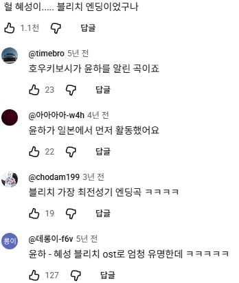

일본 1집은 명반임...
이번에 틀페에서 윤해 탓치불러서 탓폭도들 죄다 성불함

중딩때 블리치 보다가 혜성으로 윤하 알게됨
그냥 486 분위기 곡인줄알았는데
칸코쿠카라키마시타윤나데스
호우키보시키이테구다사이
이걸내가바로며칠전에들었다고? 캬
나는 윤하 재일교포인줄 알았는데 아니더라
순수 한국인이고 일본 데뷔하려고 일본어도 단기 독학함. 인간극장이었나 다른데서 아이큐 엄청 높다고 그랬던 걸로 기억함.
안광이 빛나 사람이
궤도처럼은 아니지만 우주에 미친사람임 ㅋㅋ
일본에서 먼저 터지고 한국에서도 터졌지
뭐가터졌죠?
앗…그건 한국에서만 터진걸로
벨트 대폭발이라네요
??? : 잠시 백스테이지로
강아지아기
====@====
=== @====
윤하의 벨트가 사라졌다?!
아 저 순서를 잘 모르는 사람이 많구나...
한국 데뷔 좌절 - 일본 데뷔 - 혜성 빵 - 인간극장 - 국내 인지도 상승 - 한국에서 비밀번호486 빵
빵은 혹시 벨트 터지는 사건인가요?
강아지아이
난 인간극장-486-혜성 순서로 알게되었음ㅋㅋ
인간극장 출연했을 때는 혜성 붐으로 다음 애니메이션 주제가였나 불렀을 때일텐데
그게 수왕성? 인가 하는 게이물인지 아닌지 애매한 그런 거였음.
블리치 엔딩 호우키보시 듣다가 얼마 후에 한국에서도 하길래 놀람 ㅋㅋ
윤하쟝 스키
나도 혜성으로 먼저알게됐는데
블리치를 제일 좋아했어서
혜성 나오자마자 들었는데
윤하 노래였던거 엄마가 알려줬었지...
인간극장이 하루종일 계속 붙어있는거 같긴하더라ㅋㅋㅋㅋ
조나단도 인간극장 찍을 때 금방 찍고 가겠지 했는데 하루 종일 붙어있는다고 컨셉 유지 못 한다고 ㅋㅋㅋ ㅋㅋ
지난주 틀페에서
윤하 하카나쿠츠요쿠, 탓치부르고
무대에서 '칸코쿠카라키마시타 윤나데스' 멘트박아버리고
486, 오구, 혜성, 샷건의집현전 떼창 개지렸다 캬
헐, 혜성이 일본곡이었고 블리치 엔딩 곡이었다고?? 블리치 진짜 좋아하는데 애니는 안 봐서 첨들어봤다ㅋㅋㅋ
나온지 20년쯤 되는데 블리치 좋아하면서도 이거 모르게 쉽지않은데 ㅋㅋ 애니 안보면 모를만 하겠다
혜성은 좋아하고 윤아 좋아하고
블리치 좋아하는데
블리치 애니는 그 시절엔 안 보고 만화만 보고
요즘에야 유툽 클립으로만 가끔 봤어서
엔딩곡을 들은적이 없다
들었어도 이게 그건지 몰랐을거 같아ㅋㅋ
국힙에 아이유가 있다면 국락엔 윤하지
난 그 라이더 엔딩곡인가 그거 참 좋아했었음
롤링스타도 좋음 블리치 곡
유이 윤하 양대산맥 아임까
긴 점마 왜 눈뜨냐 뮤비보다 깜짝놀랬네 ㅋㅋㅋㅋㅋㅋ
외대애들한테 들었었는데 학교에서 자주 보였는데 걍 일반인 포스라서 사람들이 그냥 지나간댔었는데ㅋㅋㅋㅋ
윤하랑 보아랑 같이 일본 TV쇼 패널 앉아있던 거 생각나네
되게 데면데면 했었는데 ㅋㅋㅋ
그리고 몇 년 전에 보아가 사회보는 음악쇼에 나와서 저 얘기 꺼내서 대화하는데 그 때도 좀 데면데면 하더라 ㅋㅋㅋ
혜성이 블리치노래인거 지금 알았음
윤하 1.5집이 최고명반
추억은 아름다운 기억, 해바라기, 혜성 등등 정규 1집에 수록된 일본노래들 한국어로 번안한 곡들인데
너무 좋음
꼭 들어봐라.. 그 중 omoide ni dekinai (추억은 아름다운 기억)은 아직도 잘 때 듣는 최고 명곡이다
진짜 띵곡임 번안인데 가사도 잘뽑혀서 일본곡도 좋고 한국곡도 좋더라
벨트뻥
노래 벨트 어딨냐고!
일본 드라마에서 왜 한국가수를 찾지 ㅋㅋ 신기하네
터치도 좋아